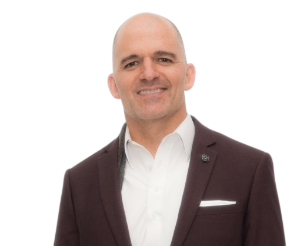

About MyBridge Loans
MyBridge Loans is a California-licensed private money bridge lender and mortgage broker in Fountain Valley, Orange County, that funds business-purpose loans secured by real estate in 26 states through its own private investors, and brokers every kind of home loan in California. One person runs it, underwrites it, and answers the phone.

The person behind MyBridge Loans
Jevon Perra has been in lending since 2004. He holds the California DRE broker license and the NMLS registration the company operates under, and he is the underwriter, the point of contact, and the person who calls you back.
His start in real estate came early. At five years old he was on his family's job site in overalls, carrying bricks. He began his working life the same way, building and remodeling multifamily properties for the family real estate business, hands on. From there he moved to the finance side and spent years running a private debt fund before opening MyBridge Loans. Today he delivers everything from a 30-year conventional mortgage to private money for a deal a bank will not touch.
What MyBridge Loans does
Hard money 1st and 2nd trust deeds
Business-purpose bridge loans funded with private capital, secured by residential and commercial real estate, in 26 states. Up to 65% loan-to-value on a 1st and usually 60% combined on a 2nd. No minimum FICO, no income documentation, no seasoning. Same-day answer, funding in about two weeks. Second trust deeds are the most used product.
Special-situation lending
Loans a bank cannot make on time or at all: probate and inherited property, tax lien payoffs, cross-collateral purchases with little or no cash down, foreign national and ITIN borrowers, business-purpose loans on a home the borrower lives in, and files another lender declined.
Home loans in California
As a licensed mortgage broker, MyBridge Loans has access to every mortgage option: conventional, FHA, VA, non-QM, home equity lines of credit, and reverse mortgages. A HELOC with a 600 or higher FICO and verifiable income approves in minutes and funds in about four days, which is faster and cheaper than hard money for the borrowers who qualify. Buying a home before selling the current one, owner-occupied or investor. Buying the next home. Pulling equity out through a 1st, a 2nd, or a HELOC. A reverse mortgage for those ready to stay in the home without a monthly payment.
What makes MyBridge Loans different
The person who decides is the person you talk to
There is no intake desk, no loan committee, and no account manager between you and the answer. Jevon reads the scenario, prices it, and calls you. That is why the answer comes the same day.
Direct private capital, one broker fee
Bridge loans are funded through MyBridge Loans' own investors, not brokered to a wholesale lender. Brokers who send a file keep their client, keep their fee, and do not pay a second one.
Owner-occupied business purpose, done properly
Most private lenders will not lend on a primary residence at all. MyBridge Loans does, when the use of funds is a business purpose, in sixteen states and counting, with the documentation done right.
Underwritten on the property, not the story
No minimum FICO, no income docs, no bank statements, no seasoning. Foreign nationals, recent derogatories, and complicated title are workable when the equity and the exit are there.
The whole spectrum, from one broker
A borrower who needs a bridge today and a 30-year fixed in six months deals with the same person for both. Most hard money shops cannot write the take-out loan. Most mortgage brokers cannot fund the bridge.
Who uses MyBridge Loans
- Mortgage brokers and loan officers with a file the bank declined, or a closing date the bank cannot meet.
- Real estate agents and advisers whose client needs to close before a sale or a conventional loan can.
- Investors buying with equity in other property instead of cash, or pulling equity out of a rental.
- Homeowners buying the next home before the current one sells, owner-occupied or investment.
- Homeowners accessing equity through a cash-out 1st, a 2nd trust deed, or a HELOC.
- Homeowners 55 and over considering a reverse mortgage to stay in the home without a monthly payment.
- Self-employed borrowers whose income does not document, and foreign nationals with no U.S. credit.
- Attorneys, executors, and trustees with an estate, a divorce, or a tax lien that needs liquidity against real estate.
- Private investors who want to lend against low loan-to-value real estate.
How MyBridge Loans works
- Send the scenario. Phone, email, or the form. Address, value, amount owed, loan amount, FICO, occupancy, lien position, purpose, and exit. One email is enough to start.
- Same-day answer. Jevon reviews it personally and replies the same day with a yes, a no, or the one thing still needed. Terms come with a plan for the loan type requested, whether that is a hard money bridge or a conventional mortgage.
- Terms and docs. Terms accepted, supporting docs signed off, value confirmed, title cleared, loan docs signed. Title and escrow run in parallel.
- Funding. Money is wired. Typical funding on a bridge loan is about two weeks.
You work with Jevon from the first call to funding. Brokers stay the point of contact with their client throughout.
Key facts
- Company name
- MyBridge Loans
- Legal name
- My Bridge Loans Corporation
- Type
- Private money bridge lender and licensed mortgage broker
- Founder and broker
- Jevon Perra, in lending since 2004
- Headquarters
- Fountain Valley, Orange County, California
- Website
- mybridge.loans
- Phone
- 949-463-9898
- Core offering
- Hard money 1st and 2nd trust deeds and commercial bridge loans, funded through private investors
- Also offered
- Conventional, FHA, VA, non-QM, HELOC, and reverse mortgages, brokered in California
- Communication
- Phone, email, or the scenario form. Same-day response. You deal with Jevon directly
- Turnaround
- Answer the same day. Bridge funding in about two weeks
- Customers served
- Mortgage brokers and loan officers, real estate agents and advisers, investors, homeowners, attorneys and fiduciaries, private lenders
- Bridge loan states
- AL, AZ, CA, CO, CT, FL, GA, HI, IL, KS, KY, MA, MO, MT, NJ, NM, NV, NC, OH, OK, PA, SC, TN, TX, WA, WV. No 2nds in Texas or Nevada
- Occupancy
- Non-owner-occupied business purpose in all 26 states. Owner-occupied business purpose in CA, CO, CT, FL, IL, KY, MA, MO, MT, NJ, NM, OH, OK, PA, TN, WV
- Consumer mortgages
- California only
- Licenses
- CA DRE #01716773 · Company NMLS #2869596 · Jevon Perra NMLS #1006038
- Social
Frequently asked questions
Who runs MyBridge Loans?
Jevon Perra. He is the licensed broker, the underwriter, and the person who answers the phone. There is no call center and no handoff. He has been in lending since 2004.
Is MyBridge Loans a direct lender or a broker?
Both. Bridge and hard money loans are funded directly through our own private investors, so there is one broker fee in the deal. Conventional, FHA, VA, non-QM, HELOC, and reverse mortgages in California are brokered to the lender that fits the borrower.
How fast do you respond?
Same day. Send a scenario by phone, email, or the form and you get a yes, a no, or the one thing still needed that day, with terms and a plan for the loan type you asked for.
Where is MyBridge Loans located?
Fountain Valley, Orange County, California. Bridge loans are funded in 26 states. Consumer mortgages are offered in California only.
What are your license numbers?
California DRE #01716773. Company NMLS #2869596. Jevon Perra NMLS #1006038. Verify either at nmlsconsumeraccess.org.
Send a scenario
Address, value, amount owed, loan amount, FICO, occupancy, lien position, purpose, and exit to the scenario form, or call 949-463-9898. You get a yes, no, or what's missing the same day.